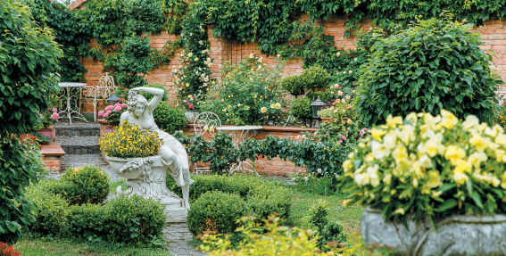
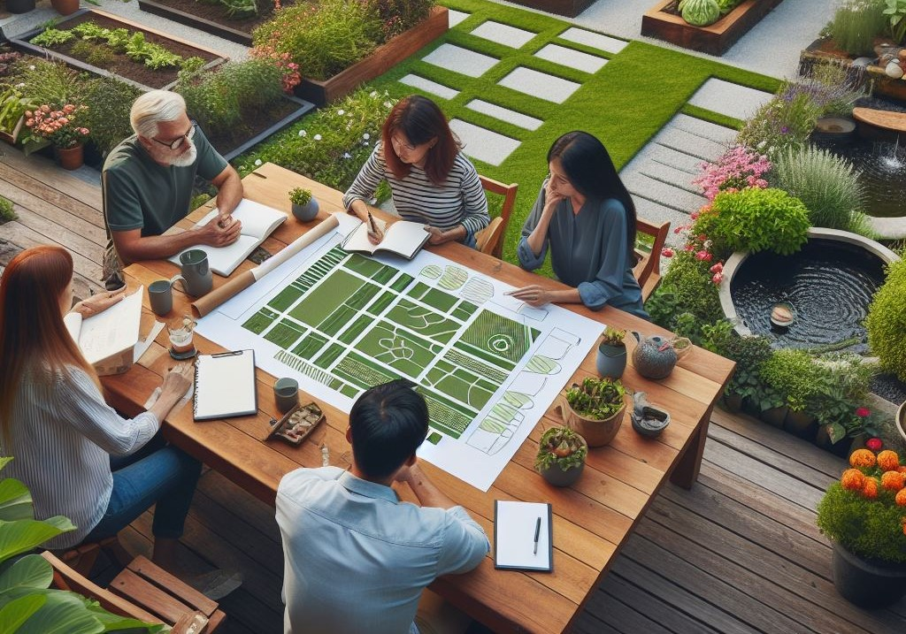
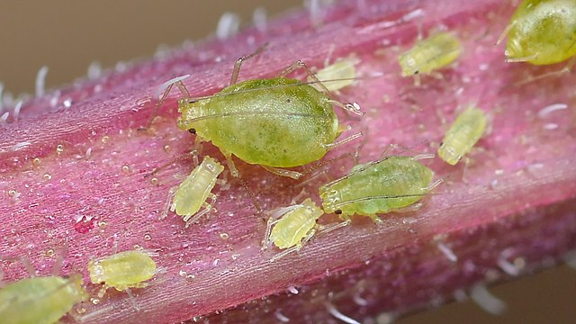

30 Small Garden Design Ideas
In a small garden, following a few key principles when planning and planting will help make your garden look bigger and feel less cluttered. Whether you have a tiny garden or a small patio, there are plenty of ways you can improve your space. Taking time to choose colour schemes, picking plants that will flower for months and using design tricks such as repetition or adding focal points, will all have a big impact. Read more
Book a Design Consultation
As a qualified horticulturalist and designer I offer a service for everyone, whatever size their garden . My mission is to help my clients to get the best from their outdoor space. If you are not looking for for a full re-design but would like help and advise to get the best from your existing garden a garden consultation will set you on the right path. Perhaps you would like to re-design the planting in a particular area of your garden. Maybe you would like me to look at your garden from a designers perspective and make recommendations for improvements. e.g. Year round interest and more colour in late summer. Perhaps you would like advise on planting to attract wildlife. Or maybe you would like help and advise on how to best maintain your garden. Whatever your requirements I will tailor my service to ensure your needs are met. Book a Consultation
Protecting Your Garden From Summer Pests and Diseases
Summer is a wonderful time for gardening, but it can also bring its own set of challenges. From pesky pests to various plant diseases, summer can make it difficult to keep your garden looking its best. Fortunately, there are many steps you can take to protect your garden from the summer pests and diseases that can do so much damage. In this blog, we’ll discuss how to identify and manage these pesky garden pests and diseases, so you can keep your garden looking beautiful all summer long. Read more